Para entender el verdadero panorama de la convivencia con animales en nuestro país, la Subsecretaría de Desarrollo Regional (SUBDERE), a través de su Programa de Tenencia Responsable de Animales de Compañía (PTRAC), en el año 2022 presentó el estudio“Estimación de la población canina y felina del país y diagnóstico de la tenencia responsable”. Este informe no solo recopiló datos clave para el diseño de políticas públicas, como el control demográfico y la reducción del abandono, sino que nos entregó una radiografía social única. Como sabemos que las cifras crudas pueden ser difíciles de digerir, en Mundo Animal ordenamos, limpiamos y transformamos los resultados más importantes en 11 infografías exclusivas para que descubras, de forma clara y sencilla, cómo viven las mascotas chilenas. ¡Acompáñanos a revisar las cifras!
La Radiografía del Hogar Chileno
Para entender el fenómeno de las mascotas en Chile, primero debemos mirar dentro de las casas. ¿Cuántas familias conviven con animales y cómo se distribuyen a lo largo del territorio nacional? Las siguientes cifras nos muestran un país profundamente mascotero.
Porcentaje de hogares con mascota en Chile
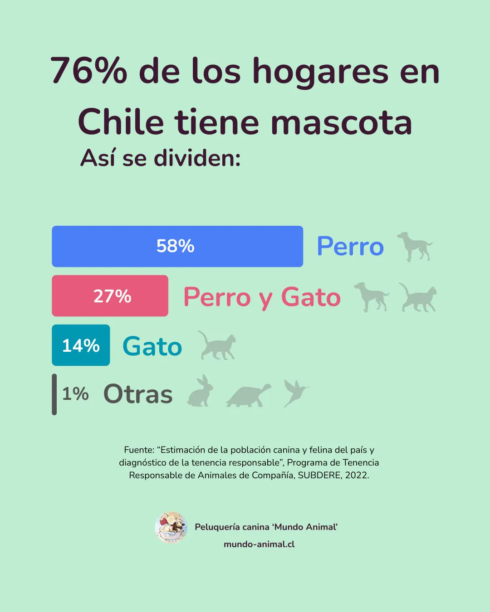
El dato inicial del estudio es contundente: el 76% de los hogares chilenos comparte su vida con al menos un animal de compañía. Esta cifra sitúa a Chile como uno de los países con mayor tasa de convivencia con mascotas en la región, transformando la tenencia responsable en un tema que nos involucra prácticamente a todos.
Convivencia en zonas urbanas vs. rurales
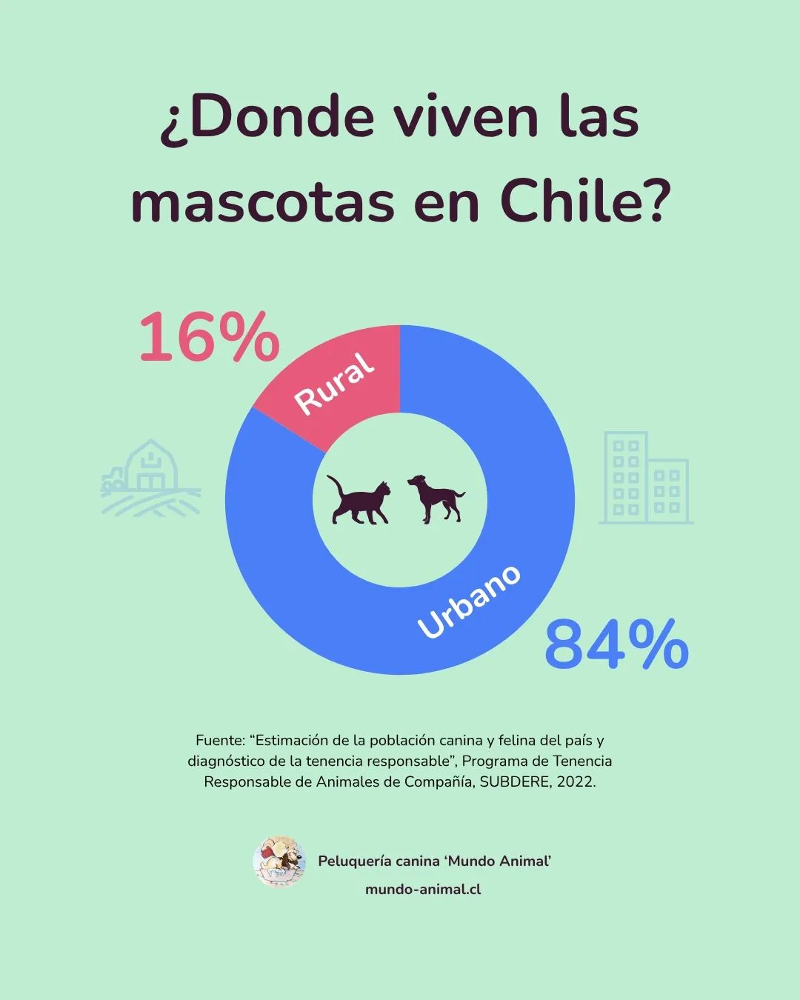
Aunque la vida en los campos y en las ciudades es muy distinta, el amor por los animales no conoce de límites geográficos. Las cifras demuestran que tanto en los entornos rurales como en las grandes urbes, las mascotas juegan un rol fundamental en el núcleo familiar, adaptándose a diferentes espacios y estilos de vida..
¿Somos más de perros o de gatos?
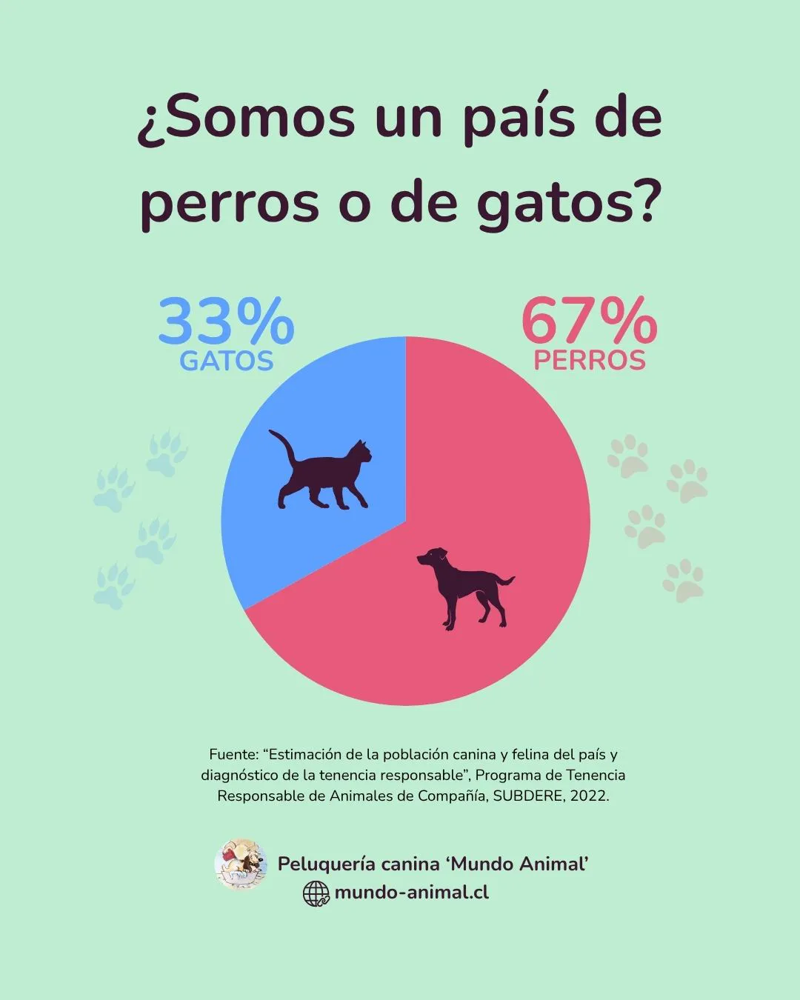
El estudio pone fin al eterno debate: en Chile, los perros siguen siendo los reyes mayoritarios de los hogares. Por cada gato que maúlla en el país, hay prácticamente dos perros moviendo la cola. Específicamente, los canes representan el 67% de la población total de mascotas frente a un 33% de felinos, consolidando una preferencia histórica que, de todas formas, ve cómo el mundo gatuno sigue ganando terreno año a año.
El género en nuestras mascotas: Machos vs. Hembras
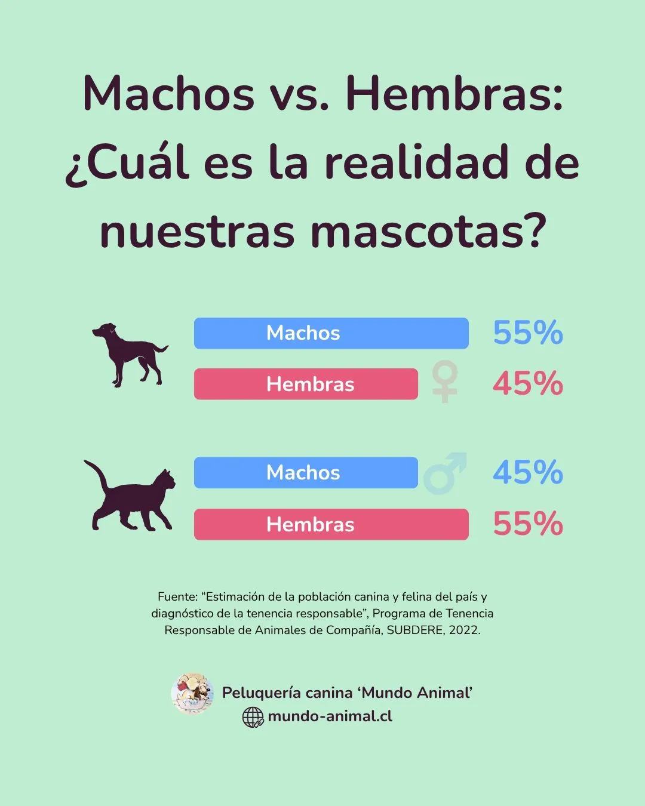
Al mirar el equilibrio de géneros entre la población canina y felina del país, los datos muestran una distribución bastante equitativa. Conocer estos porcentajes es vital para los servicios de salud animal, ya que permite proyectar las necesidades de campañas de esterilización específicas para machos y hembras a lo largo de Chile.
Cuidado, Salud y Prevención
La tenencia responsable va mucho más allá de ofrecer un techo y alimento; el bienestar físico de nuestros compañeros depende de la constancia en su salud preventiva. A través de los siguientes tres indicadores, el estudio de la SUBDERE revela cuáles son los hábitos reales de los chilenos cuando se trata de proteger a sus perros y gatos de enfermedades.
Visita anual al veterinario: ¿Cumplimos con el control regular?
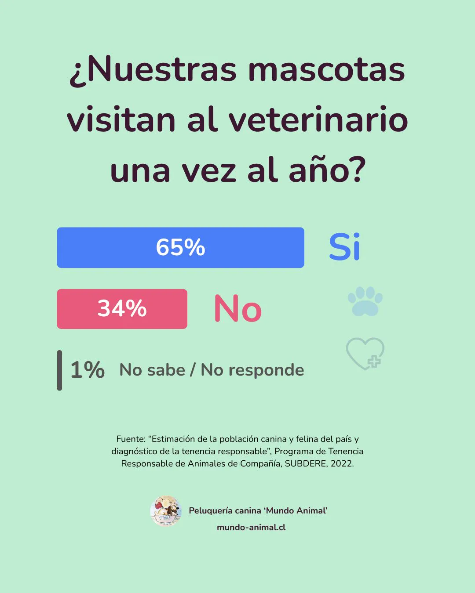
El chequeo médico preventivo una vez al año es el primer escudo contra enfermedades silenciosas. Las cifras de este gráfico nos muestran qué tan incorporada tenemos la cultura de la prevención en Chile: mientras un grupo importante cumple rigurosamente con llevar a su mascota al especialista de forma anual, todavía existe una brecha de tutores que solo acude a la clínica cuando el animal ya presenta síntomas visibles de enfermedad.
Vacunación anual al día: La barrera contra virus comunes
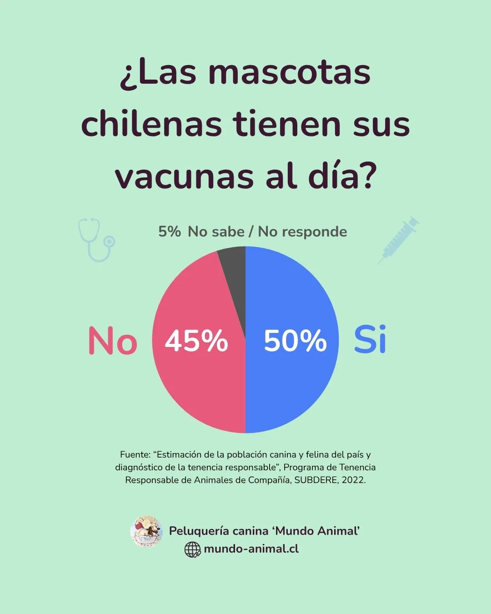
Mantener el calendario de vacunación al día (como la séxtuple/óctuple en perros, la triple felina en gatos y la antirrábica en ambos) es un asunto crítico de salud pública. Este gráfico refleja la realidad de la inmunización en el país y enciende una alarma importante: saltarse la dosis anual deja a nuestras mascotas expuestas a virus altamente contagiosos y letales, demostrando que aún queda trabajo por hacer en concientización.
Desparasitación periódica: Un hábito que requiere constancia
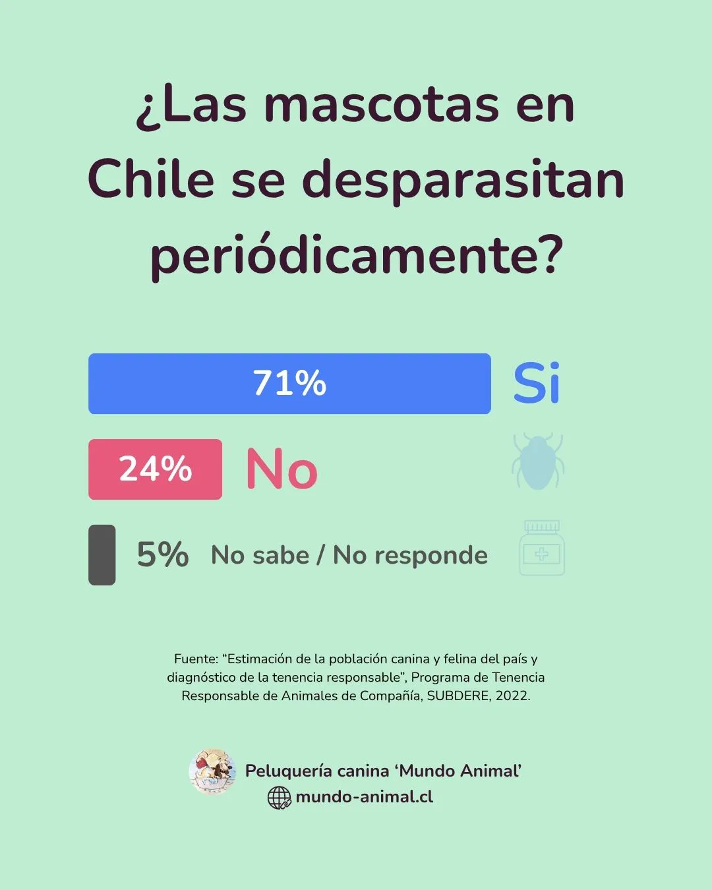
A diferencia de las vacunas que se aplican una vez al año, la desparasitación (tanto interna para lombrices como externa para pulgas y garrapatas) debe ser constante y periódica a lo largo de toda la vida del animal. Las cifras revelan el comportamiento de los hogares chilenos frente a esta rutina; un hábito esencial no solo para el bienestar de perros y gatos, sino también para proteger a toda la familia humana de parásitos transmisibles.
Tenencia Responsable y Convivencia
La forma en que nuestras mascotas se integran con el entorno y las medidas que tomamos para su seguridad definen la calidad de la convivencia en nuestros barrios. En este último bloque, revisamos los datos del estudio relacionados con la identificación de los animales y las dinámicas cotidianas dentro y fuera del hogar.
Registro Nacional de Mascotas
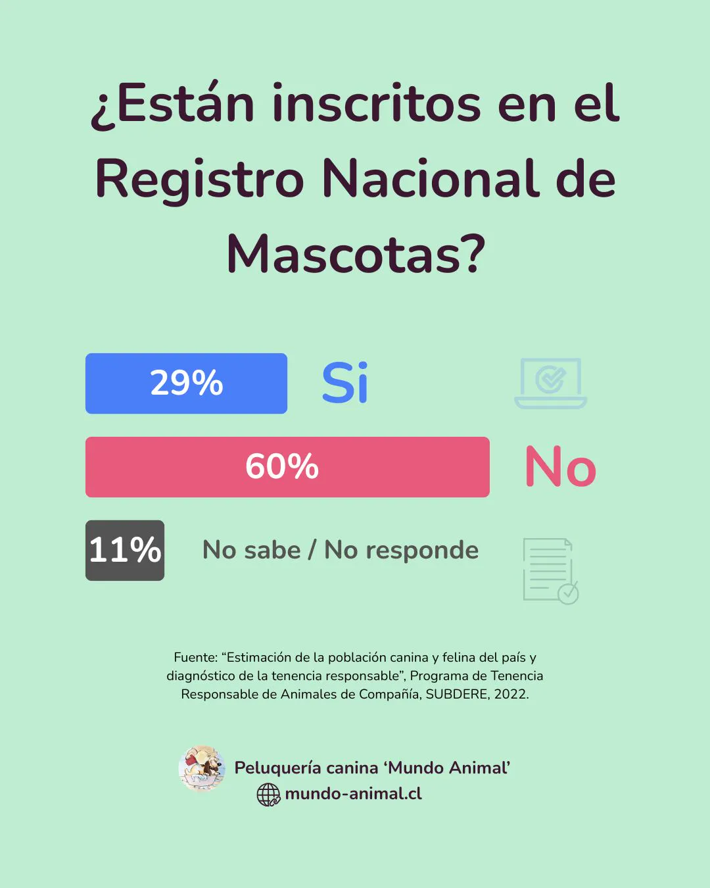
El Registro Nacional de Mascotas es el paso administrativo obligatorio para formalizar el vínculo con nuestros compañeros. Las cifras muestran el nivel de adopción de este trámite en el país; un indicador clave que refleja cuántos tutores han dado el paso legal para asegurar que su perro o gato cuente con el respaldo de la normativa nacional.
¿Nuestras mascotas tienen microchip?
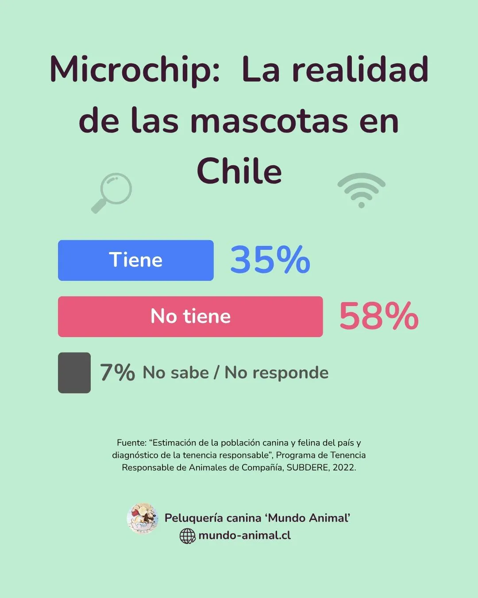
El microchip es el dispositivo físico que permite la identificación inalterable del animal si este llega a perderse. Al contrastar este gráfico con el anterior, se hace evidente una realidad muy particular en Chile: existe una brecha de tutores que cumplen con la implantación médica del chip en la veterinaria, pero que por desconocimiento o tiempo dejan el trámite a medias y no finalizan la inscripción en el registro.
¿En casa, con correa o libres en la calle?
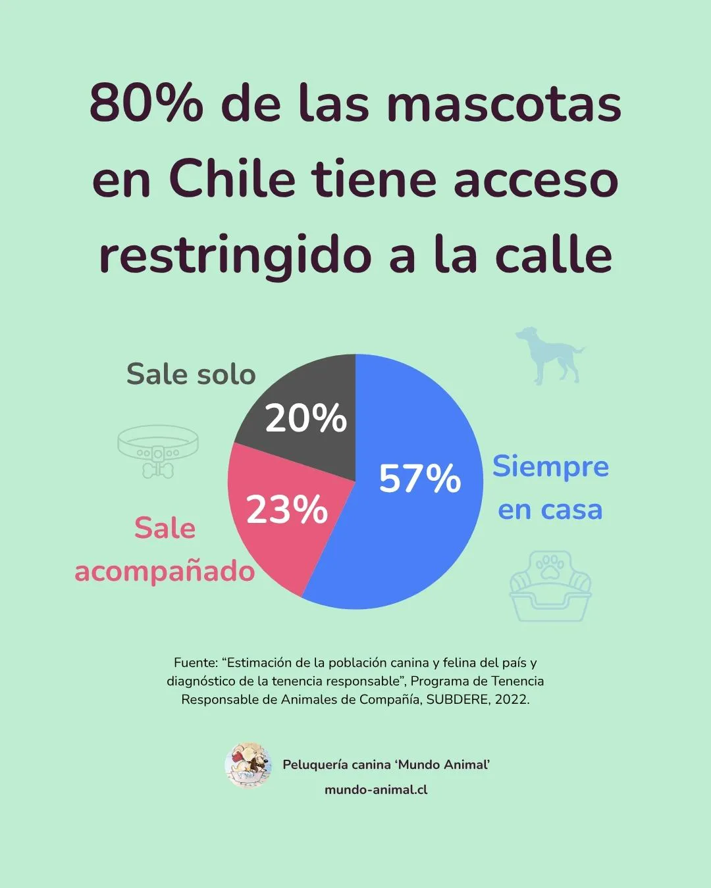
Este es uno de los puntos con mayor impacto en la convivencia comunitaria y la seguridad animal. El gráfico revela cómo recorren la calle los perros y gatos en Chile: afortunadamente, una gran mayoría se mantiene resguardada dentro del hogar o sale bajo supervisión humana (con correa), reduciendo drásticamente el riesgo de accidentes, peleas o extravíos frente a un porcentaje que aún transita en solitario.
¿Dónde duermen nuestras mascotas? El espacio en el hogar
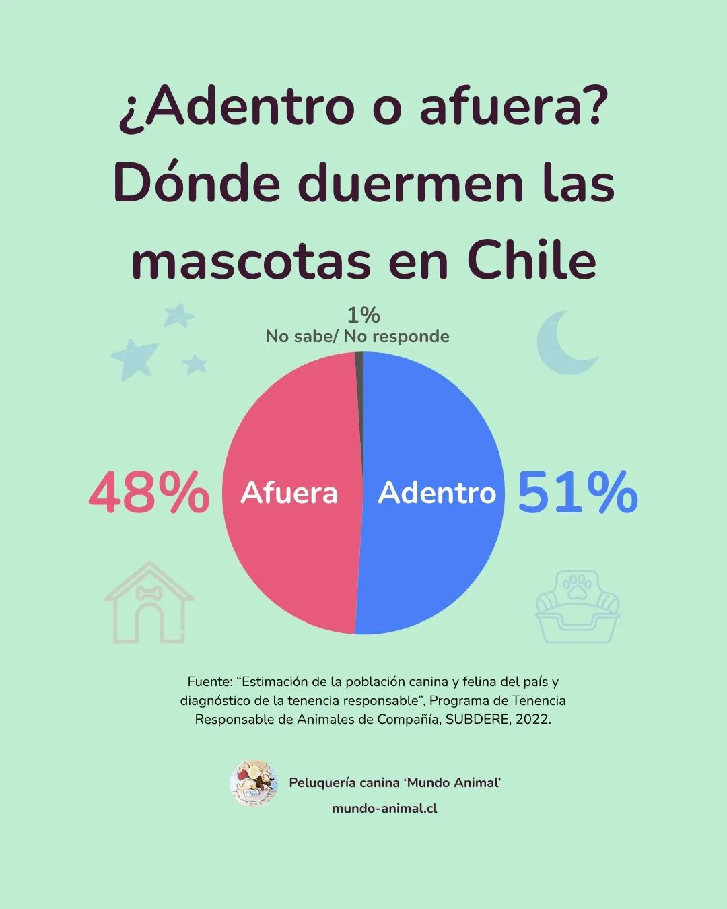
El lugar que eligen los tutores para el descanso de sus animales habla directamente del rol que ocupan en la familia moderna. Las cifras demuestran que las mascotas han ganado terreno de forma definitiva dentro de la casa, pasando de habitar los patios exteriores a compartir los espacios comunes y dormitorios, consolidando el concepto de la mascota como un miembro más del núcleo familiar.
La radiografía que nos entrega este estudio de la SUBDERE es clara: Chile se ha transformado en un país profundamente mascotero, donde los perros y gatos ya no son vistos como simples guardianes o adornos del patio, sino como miembros oficiales de nuestras familias. El desafío actual ya no es convencer a las personas de incluir un animal en sus vidas, sino educar y entregar las herramientas necesarias para que esa convivencia sea segura, saludable y responsable. Aunque los datos muestran avances gigantescos, las brechas en salud preventiva e identificación nos trazan una hoja de ruta clara sobre las tareas que aún tenemos pendientes como sociedad.
Conclusiones
- Identificación muy baja: Con solo un 35% de chips y un 29% de registros, la gran mayoría de las mascotas en Chile sigue estando desprotegida legalmente.
- Brecha en salud preventiva: Falta cultura del control regular: la vacunación anual y la desparasitación periódica se postergan y se acude más por emergencias.
- El hogar como refugio seguro: Perros y gatos ganaron el interior de la casa y pasean bajo supervisión, reduciendo riesgos en la calle y mejorando la convivencia urbana.
¿Encuentras útil el artículo?
Compártelo con alguien más